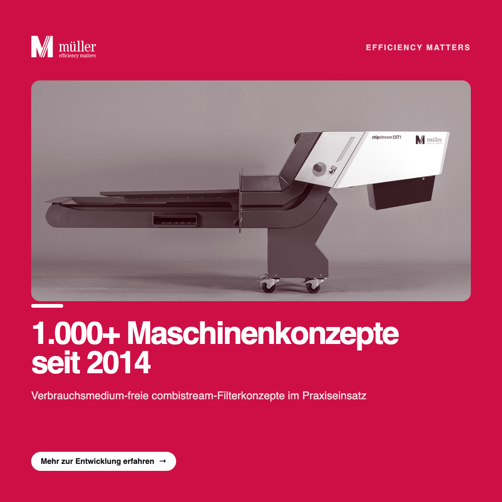
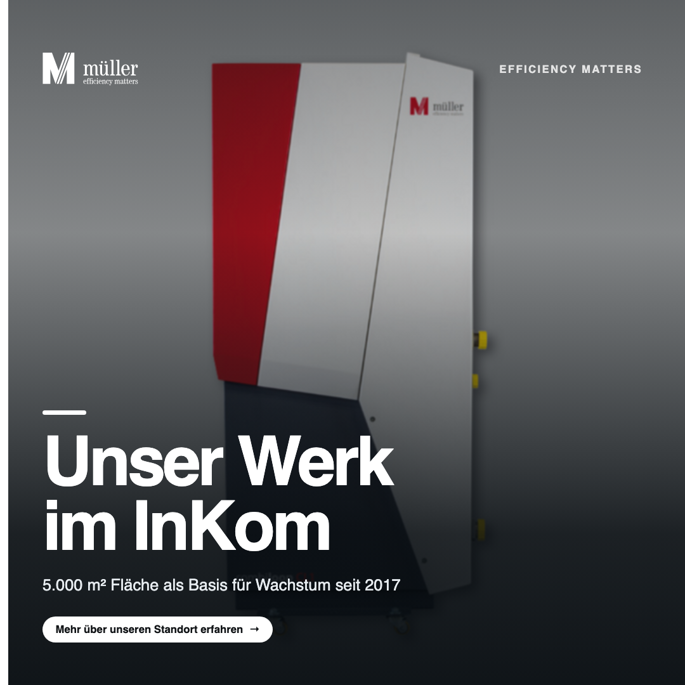
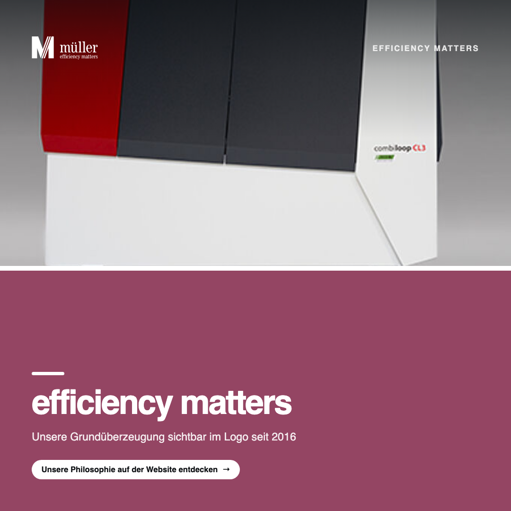

MARKETS
EDITION 08 · 2026
Müller
Hydraulik
Wie Müller Hydraulik seine technische Exzellenz in eine konsistente, fachlich fundierte Social-Media-Präsenz übersetzt.
![Müller Hydraulik]()
Wo Müller Hydraulik
heute steht
Bestandsaufnahme von Marke, Kanälen und bisheriger Kommunikation — ehrlich und ohne Schönfärberei.
Wo Müller Hydraulik heute steht
Stärken treffen Chancen
- —Nischenmarktführer für KSS-Hochdrucktechnik seit 1990 kontinuierlich weiterentwickelt.
- —Über 1.000 verkaufte Maschinenkonzepte mit combistream-Filterkonzepten seit 2014.
- —Zwei starke Geschäftsfelder: Werkzeugmaschinen-Hochdrucktechnik und Nutzfahrzeug-Baugruppen für Feuerwehr.
- —Eigene Blechfertigung durch LMB-Zukauf ermöglicht Feuerwehrfahrzeug-Erstausrüstung.
- —Von der Website aus ist kein Social-Media-Profil verlinkt.
- —Schema.org-Auszeichnung fehlt komplett, Inhalte bleiben für KI schwer lesbar.
- —Nur eine von elf Seiten mit vollständigen Open-Graph-Tags.
- —Rund 30 Prozent der Bilder haben keinen Alt-Text.
- —Aufbau einer LinkedIn-Präsenz kann Fachautorität und Leadanbahnung stärken.
- —Schema.org-Daten könnten Sichtbarkeit in KI-gestützten Suchsystemen erhöhen.
- —Visuelle Kanäle wie Instagram können Recruiting und Arbeitgebermarke unterstützen.
- —Vollständige Open-Graph-Tags können Reichweite bei Social-Shares verbessern.
- —Wettbewerber mit aktiver Social-Media-Präsenz könnten Sichtbarkeit übernehmen.
- —Fehlende KI-Lesbarkeit kann Position in neuen Suchformaten schwächen.
- —Ohne regelmäßige Bespielung droht Relevanzverlust bei Fachzielgruppen.
Klare Ziele,
klare Kennzahlen
Vier priorisierte Ziele, abgeleitet aus dem Status quo — jedes mit Kennzahlen, an denen sich Erfolg messen lässt.
Vier Ziele, die aufeinander einzahlen
Technische Entscheider über fundierten Content von der Kompetenz überzeugen und Kontaktaufnahme vorbereiten.
Expertise zu Standzeiten, Prozesssicherheit und Energieeffizienz regelmäßig und verständlich kommunizieren.
Regelmäßig bespielte Profile auf LinkedIn, Instagram und Facebook aufbauen und stärken.
Feuerwehr- und Einsatzfahrzeughersteller über Leichtbau- und Sicherheitslösungen gezielt informieren.
Drei Kanäle,
klare Rollen
LinkedIn, Instagram und Facebook — jeder mit eigener Aufgabe, Zielgruppe und Tonalität, aber einer gemeinsamen Story.
Jeder Kanal mit eigener Aufgabe
Einmal produzieren, dreimal erzählen
Die Entwicklung vom Hydraulik-Service 1990 zum spezialisierten Maschinenbauer mit über 1.000 verkauften combistream-Konzepten zeigt: Effizienz ist bei Müller Hydraulik gelebte Praxis, nicht nur Slogan. Diese Geschichte wird kanalspezifisch aufbereitet – fachlich auf LinkedIn, visuell auf Instagram, nahbar auf Facebook.
Wie combistream-Filterkonzepte seit 2014 über 1.000 Maschinen prozesssicherer machen.
Bilder aus dem 5.000 m² Werk in Zimmern o.R. zeigen Fertigung live.
Kurze Rückblicke auf die Firmenhistorie seit 1990 für die Region verständlich aufbereitet.
Fünf Content-
Pillars
Ein System aus Themensäulen — damit jeder Beitrag ein Ziel hat und die Marke über Zeit ein klares Profil bekommt.
Fünf Säulen, ein Profil
Erklärungsbedürftige KSS-Hochdruck- und Spänemanagement-Themen verständlich und vertrauensbildend aufbereiten.
Produkte entlang konkreter Nutzenversprechen statt reiner Merkmalslisten vorstellen.
Markenkern und Werte mit belegbaren Aussagen statt unbelegten Superlativen unterlegen.
Authentische Einblicke in Werk, Team und Standort schaffen Nähe und stärken Recruiting.
Nur belegte Zahlen und überprüfbare Entwicklungsschritte für glaubwürdige Positionierung nutzen.
Von der Säule zum Beitrag
Vom Plan
zum Beitrag
Ein konkreter Redaktionsplan über vier Wochen — mit realistischer Frequenz, Formatmix und ausgewogenen Contentschwerpunkten.
Redaktionsplan · Woche 1 & 2
Redaktionsplan · Woche 3 & 4
Zwölf Posts,
kein Copy-Paste
Vier Beiträge je Kanal — kanalgerecht in Tonalität, Format und CTA, als fertige KI-Motive im 4-Wochen-Kalender. Anschließend drei davon als Mockup im Müller Hydraulik-Branding.
Zwölf Motive, ein Fahrplan

Zahlen, Entwicklung & Nachweise
Effizienz lässt sich nicht behaupten, sie lässt sich belegen: Seit 2014 setzen wir bei combistream auf verbrauchsmedium-freie Filterkonzepte – inzwischen verbaut in über 1.000 gebauten und verkauften Maschinenkonzepten. Für Betreiber von Werkzeugmaschinen bedeutet das: bewährte Filtertechnik, die sich in der Praxis über Jahre bestätigt hat, statt eines neuen Versprechens ohne Referenz. Diese Zahl ist für uns kein Marketingwert, sondern das Ergebnis konsequenter Weiterentwicklung unserer Hochdruck- und Filtrationslösungen am Standort Zimmern o.R. Wer auf Prozesssicherheit und Standzeiten Wert legt, findet hier einen nachvollziehbaren Beleg für unsere Kompetenz in der KSS-Hochdrucktechnik.
#KSSTechnik #Maschinenbau #Zerspanung #EfficiencyMatters


Menschen & Unternehmenskultur

müller_hydraulik 5.000 m² Fläche, ein klarer Plan: 2017 sind wir ins InKom nach Zimmern o.R. gezogen – seither Basis für Fertigung, Montage und Weiterentwicklung unserer Hochdrucktechnik. Ein Ort, der wächst, weil hier Ideen zu Maschinen werden. Vom ersten Entwurf bis zur fertigen Anlage entsteht bei uns alles unter einem Dach.

Vertrauen, Qualität & Verantwortung
efficiency matters – dieser Satz steht seit 2016 in unserem Logo, weil er unsere Grundüberzeugung trägt: Effizienz und Nachhaltigkeit gehören für uns zusammen. Kein Werbespruch, sondern Programm für jede Anlage, die wir in Zimmern o.R. entwickeln und bauen. Wer uns kennt, weiß: Wir denken in Ressourcen, nicht nur in Leistungsdaten.

Von der Idee
zur Umsetzung
Was wir empfehlen — und wie eine Zusammenarbeit konkret abläuft, Schritt für Schritt.
Vier Empfehlungen auf den Punkt
LinkedIn-Profil aufbauen und regelmäßig mit Fachcontent bespielen, um Sichtbarkeit bei Werkzeugmaschinen-Entscheidern zu erhöhen.
Schema.org-Auszeichnung und vollständige Open-Graph-Tags ergänzen, damit Inhalte für Suchmaschinen und KI-Systeme lesbar werden.
Fachwissen, Produktnutzen und Unternehmensgeschichte in einem festen Redaktionsplan über alle drei Kanäle verteilen.
Funktionssitze und weitere Nutzfahrzeug-Lösungen gezielt für Feuerwehr- und Einsatzfahrzeughersteller sichtbar machen.
So arbeiten wir zusammen
Ziele, Tonalität und Themen gemeinsam schärfen.
Monatlicher Contentplan je Kanal und Pillar.
Text, Grafik & Video — im Branding des Kunden.
Kurze Freigabeschleife — Sie behalten die Kontrolle.
Ausspielung, Monitoring und Antworten.
Kennzahlen auswerten — und zurück zu Schritt 1.
Was Umsetzung kostet
Marketingkonzept, 9 Posts, Flyer, Print-Vorlagen, Visitenkarten, private Landingpage & SEO/GEO-Check — in 24 h.
Sprechen wir über
Ihre Sichtbarkeit.
Ein unverbindliches Erstgespräch genügt, um zu sehen, was für Müller Hydraulik realistisch drin ist. Ich freue mich darauf.
MARKETS
![QR-Code]()